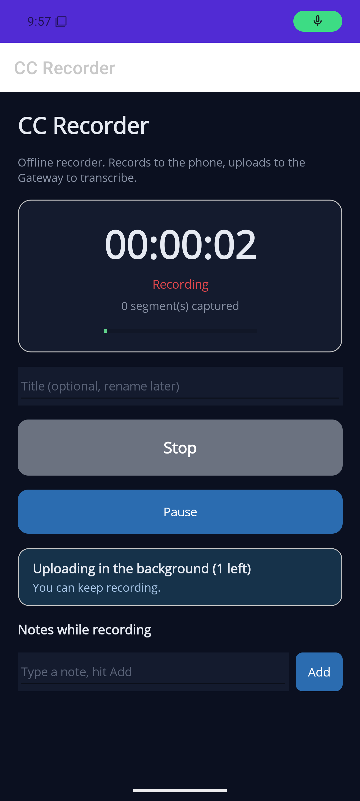
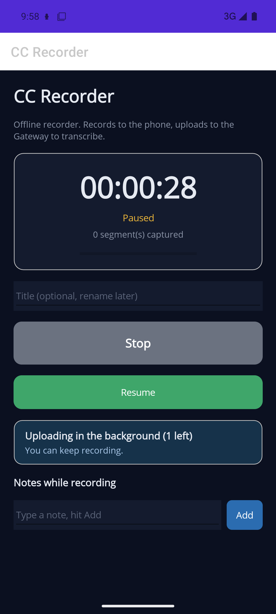

You recorded a backlog while traveling. All six recordings transcribed into your vault; here's each note and what was done about it. 2026-05-23.
4 fixed & verified 1 built, needs phone redeploy 1 coded, needs Gateway restart 1 deferred (big feature)
"...we need to show that it's recording. Maybe show that voice is coming in, like a synthesis that moves up and down... make sure nothing is turned down or too low." (13:52)
Added a live microphone level meter under the timer (the green bar), driven by the recorder's real-time audio amplitude at 10 fps. It moves with your voice so you can confirm the mic is hearing you and isn't muted or too quiet. Verified on the emulator (silent there, so it sits near zero - it'll bounce on a real mic).
"...an ability to record voices and then pause it and continue... there's no point for a mute button if we're doing pausing. Pausing should be enough." (13:53)
Added a Pause / Resume button. Pausing suspends capture and freezes the timer; resuming continues the same recording. Mute was intentionally skipped, per your call. Verified below.


"...it keeps saying uploading in the background, 2 left, and it doesn't seem to be uploading. Figure out if upload happens even if the app is in the background... screen times out... lock screen - is the app still running?" (14:35)
Two real problems, both fixed:
Note: this is built and compiles; it needs one more deploy to your phone (the wireless link dropped when the phone slept). Everything that can be checked on the emulator passed.
"...we need a much better icon. It says .NET right now." (14:35)
While transcribing your road recordings I found a bug: two of them ("13:53" and "13:58") were already transcribed and filed to your vault, but the phone had marked them "Retry" - the upload reached the server and filed successfully, but the acknowledgment never made it back to the phone, so it thought it failed. Re-uploading then hit "document already exists."
Fix: the server now treats an already-filed recording as success (idempotent) and returns the existing transcript instead of erroring or creating a duplicate. The code is in; it goes live the next time the Gateway is rebuilt/restarted (needs your OK, since it's your running process).
"...I don't know what this application is actually written in. Is it actually written in .NET, the phone application?" (14:35)
Yes - the phone app is .NET MAUI (C#), the same stack as the rest of cc-director. The audio capture and background upload use Android platform APIs (MediaRecorder, foreground service, WorkManager) called from C#.
"We should have a personal assistant I can talk to on the Gateway... see all sessions, quickly fire up a personal assistant... start a new session and pick its repo from the Gateway, without going to the box. Buttons first, then voice." (13:58, 2 min)
This is a substantial, separate feature touching the Gateway UI and the Director session APIs - not a recorder fix. Captured here and in your vault; worth its own focused effort when you're ready.
Plan: docs/plans/phone-recorder-otter-replacement.md · All changes uncommitted, per house rules.